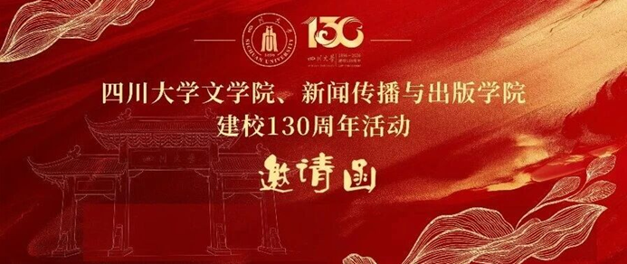

学院通知 · 校园活动
四川大学文学院、新闻传播与出版学院建校130周年活动邀请函
发布时间：2026-07-05
亲爱的各位文学院、新闻传播与出版学院校友： 在母校四川大学即将迎来建校 130 周年之际，为共叙同窗情谊、重忆校园岁月、同贺母校荣光，文学院、新闻传播与出版学院定于 2026 年 9 月 27 日 -28 日 ，在四川大学江安校区举办系列活动。这是 2026 年 4 月原文学与新闻学院（新闻学院、出版学院）、原海外教育学院实行组织机构调整，成立文学院、新闻传播与出版学院后迎来的首次校友盛事，具有承旧启新的历史意义。现谨向遍布全球的原文学与新闻学院（新闻学院、出版学院）、原海外教育学院历届全体校友，发出最诚挚的邀约，盼君返校赴约。 本次邀约覆盖原文学与新闻学院（新闻学院、出版学院）、原海外教育学院所有本、硕、博历届学子及长短期进修生。为统筹做好校友返校服务工作，根据目前文学院、新闻传播与出版学院设立情况，现开设两条专属线上信息登记通道，各位校友可根据就读专业对应所属学院（附后）扫码填报返校信息： 【文学院（含原海外教育学院）校友返校信息统计二维码 【新闻传播与出版学院校友返校信息统计二维码】 本次返校信息填报统计截止时间为 2026 年 7 月 30 日 ，请各位校友尽早完成信息登记，便于学院为大家提供完善周到的返校服务。 百卅弦歌启新章，一纸邀约候君归。诚邀各位校友重返母校，重走求学之路，再会师长同窗，共叙人文初心，同传时代之声，一同见证母校跨越百卅的荣光。 静候诸君如约归来！ 文学院（含原海外教育学院）联系方式 联系人：银浩、祁骁、王志华、刘廷林 联系电话： 028-85995656 、 85993668 地址：成都市双流区川大路二段文科楼 1 区 321 办公室 邮箱： wxbangongshi@sina.com 新闻传播与出版学院联系方式 联系人：陈薇、邱树雄、唐菾 联系电话： 028-85993939 地址：成都市双流区川大路二段文科楼 1 区 321 办公室 邮箱： jcp@scu.edu.cn 四川大学文学院 四川大学新闻传播与出版学院 2026 年 7 月 5 日
